G&W Zelda hack
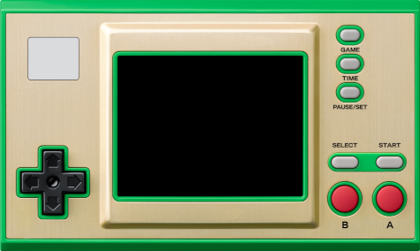
Un conocido fabricante japonés de videojuegos empezó a comercializar a finales de 2022, un par de máquinas replicando el aspecto de algunas de las viejas G&W, sobre la base de un microcontrolador STM32H7 que ejecuta un firmware baremetal con emuladores de NES y GB, tres juegos clásicos y una aplicación reloj inspirados en la franquicia Zelda. La máquina resulta muy interesante por las virtudes de estar basada en un microcontrolador, en lugar de un microprocesador, es decir gran duración de la pequeña batería que contiene (la de un joycon de Switch), arranque y modo suspensión instantáneos. El soporte de datos es un pequeño chip flash NOR de 4MB (en el caso del modelo Zelda), suficiente para alojar los emuladores y juegos mencionados, pero muy escaso si se quiere sacar partido de la máquina y de su relativamente potente CPU.
El firmware original sirve para comprobar la solvencia de la plataforma para emular al menos las máquinas de 8 bit que funcionan originalmente, por lo que en seguida el dispositivo resultó atractivo para la comunidad hacker. Al poco tiempo de empezar a comercializarse ya aparecieron procedimientos para desbloquear y modificar la máquina de manera que se pudieran instalar más emuladores y juegos.
La primera modificación importante propuesta por la comunidad consistía en sustituir el chip flash por otro de 64MB para disponer de más espacio para juegos y emuladores. Tiempo después la modificación evolucionó para incluir un slot de tarjetas microSD donde almacenar los juegos y savestates, así como para simplificar enormemente el proceso de actualización, convirtiendo a la máquina así modificada en una máquina de emulación portátil inigualable en aspectos como portabilidad, tamaño, duración de la batería y tiempos de arranque.
Con cualquiera de las dos modificaciones se consigue emular las siguientes máquinas:
- Amstrad CPC6128 (beta)
- Atari 2600
- Atari 7800
- ColecoVision
- Gameboy / Gameboy Color
- Game & Watch / LCD Games
- MSX1/2/2+
- Nintendo Entertainment System
- PC Engine / TurboGrafx-16
- Pokémon Mini
- Sega Game Gear
- Sega Genesis / Megadrive
- Sega Master System
- Sega SG-1000
- Tamagotchi P1
- Watara Supervision
En este artículo vamos a describir los pasos para realizar las dos modificaciones. La modificación para añadir el slot microSD requiere también la sustitución de la flash, ya que cada vez que carguemos un juego nuevo de la microSD se grabará en el chip flash, y el original de 4MB soporta pocos ciclos de escritura dado que no estaba previsto que se utilizara de esta forma.
Todo el proceso ha sido realizado sobre un sistema Linux. En principio el desarrollo sobre sistemas Windows y MacOS X también es posible, pero los pasos para instalar los requerimientos y el software necesario necesariamente cambiarán.
Conexión al puerto SWD¶
El desbloqueo del procesador y la modificación del firmware se hacen a través del puerto SWD que habitualmente tienen los microcontroladores STM32 para programar su memoria flash interna y depurar los desarrollos. Este puerto SWD se encuentra en la PCB sin poblar, es decir sin pines o conectores soldados.
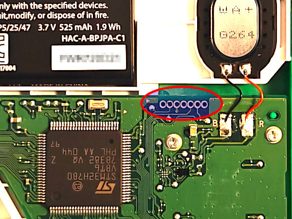
Para hacer la conexión con dicho puerto hay varias opciones:
- Soldar cables directamente.
- Introducir cables limpios o cables de pin macho, inclinándolos para forzar el contacto.
- Utilizar pinzas sonda de conexión especializadas.
- Utilizar pinzas pogo pin (Single row 5pin).
- Rutear los pines SWDIO y SWCLK hacia el puerto USB-C.
Versión difícil¶
Como empecé a cacharrear con la máquina antes de que apareciera el mod de microSD, en su momento realicé el ruteado del puerto SWD al USB-C. Si se va a terminar realizando el mod de microSD no merece la pena el esfuerzo, dado que a partir de entonces el flasheo del firmware se realizará desde la propia microSD. De todas formas, a propósitos de documentación vamos a describir cómo se haría el ruteado.
El puerto USB-C sólo tiene conectados los pines de alimentación ya que está previsto únicamente para cargar la máquina. Por tanto se pueden utilizar los pines D+ y D- que están libres para cablearlos a los pines SWDIO y SWCLK que son los únicos imprescindibles del puerto SWD. Necesitaremos también conectar a 5V y GND, pero estos ya se encuentran cableados en el puerto USB-C. El ruteado se hace con un fino cable barnizado (enamel) de los que se utilizan para construir bobinas. La soldadura a los dos pines centrales del puerto USB-C que son los que corresponden a D+ y D- es complicada al tener un paso muy pequeño, pero con paciencia y flux puede lograrse.
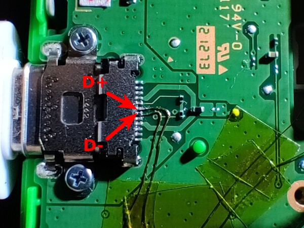
Una vez resuelto la única parte difícil del procedimiento, es decir soldar los cables al puerto USB, estos se van sujetando cada cierta distancia con cinta Kapton y dirigiendo hacia la zona de la batería por donde se aprovecha el rebaje a ambos lados que hay del alojamiento que la rodea para pasar uno de los cables. El otro se conduce por el espacio que hay entre alojamiento de la batería y la PCB. De esta forma se consigue que ambos cables no puedan tocarse, aunque en teoría al estar barnizados no debería haber problema, se adopta este camino separado como precaución adicional.
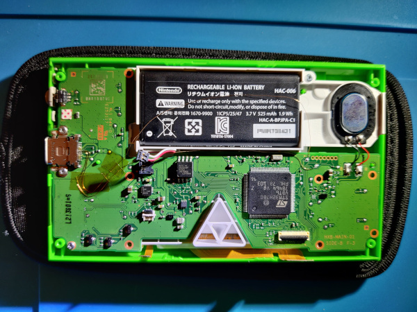
Una vez que los cables alcanzan las proximidades del puerto SWD, se utilizan los dos test pads que pueden verse en la foto para realizar las soldaduras.
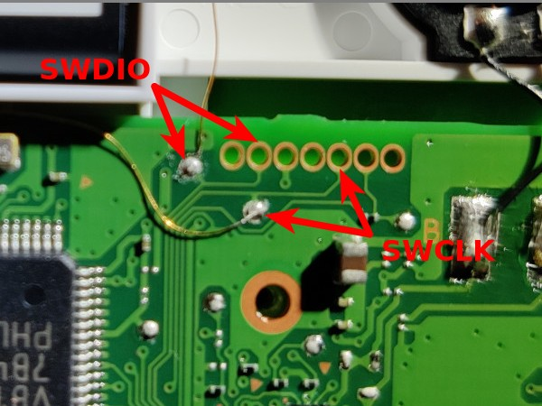
La correspondencia entre D+ y D- en el puerto USB-C con los SWDIO y SWCLK del puerto SWD, puede hacerse de cualquier forma siempre que tengamos claro donde está cada cual para más tarde hacer el adaptador USB-SWD que necesitaremos. En este montaje se ha optado por la siguiente correspondencia.
- D+ ↔ SWDIO
- D- ↔ SWCLK
Warning
La idea en un principio era adoptar la correspondencia utilizada en esta otra guía, pero por un error cometido al principio, se terminó haciendo justo al revés. Como se comentaba antes, en realidad no es problema siempre que se tenga claro cómo están hechas las conexiones. Este aviso es sólo por si alguien intenta seguir ambas guías de forma simultánea, para que se tenga en cuenta dicha diferencia.
Una vez hecho el ruteado del puerto, necesitaremos construir el adaptador para poder extraer las señales SWDIO y SWCLK del puerto USB-C. Para ello se corta un cable USB-A convencional para tener acceso a los cuatro cables que contiene por separado y se sueldan a ellos conectores hembra de pin. El adaptador se completa con un adaptador USB-A a USB-C que se marca para orientarlo correctamente cuando lo vayamos a utilizar, ya que sólo hemos ruteado los pines D+ y D- de uno de los dos lados (el puerto USB-C es reversible).
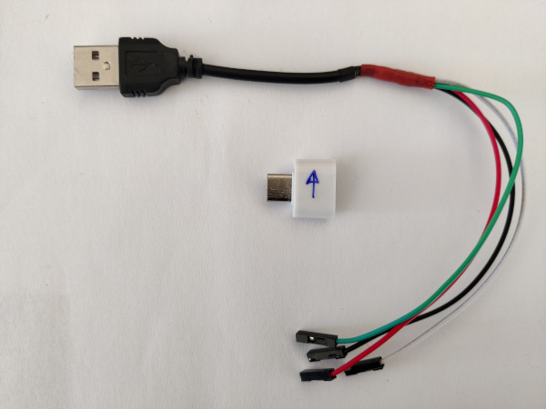
Los colores de los cables suelen estar estandarizados de la siguiente forma:
- Rojo: 5V
- Negro: GND
- Verde: D+
- Blanco: D-
Versión fácil¶
La manera recomendada para hacer la conexión al puerto SWD (si no se quiere soldar, que es la opción más fiable) es mediante pinzas sonda de conexión especializadas. Para aplicar dichas pinzas, es recomendable desconectar previamente la batería de la consola. El conector de la batería salta fácilmente al introducir una pieza fina de plástico por debajo del mismo.
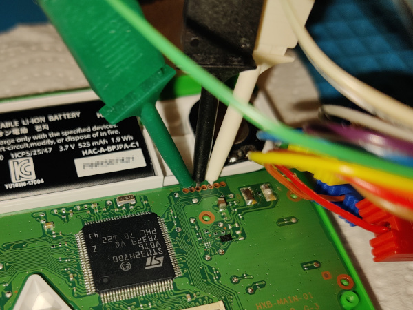
Sonda de programación¶
Ya tenemos resuelto dónde conectar en la consola. Ahora necesitamos un dispositivo capaz de comunicarse con ese puerto SWD del microcontrolador. Las opciones son:
- Raspberry Pi Pico (Recomendado)
- STLink
- JLink
- DAPLink
- Raspberry Pi (GPIO)
Me decanté por usar una Raspberry Pi Pico. Para que funcione como sonda de programación SWD hay que cargarle el firmware debugprobe. En mi caso utilicé el fichero picoprobe.uf2 de esta release en concreto. Para flashear la Pico sólo hay que conectarla al ordenador por USB mientras pulsamos el botón BOOTSEL para forzar el modo en el que se monta como una unidad de almacenamiento y arrastrar el fichero .uf2 a esa unidad. Tras autoflashearse, la Pico se reiniciará automáticamente y empezará a funcionar como sonda de programación SWD.
Una vez programada la Pico, solo queda hacer las conexiones de los cables que habíamos conectado al puerto SWD de la Game&Watch. Podemos utilizar el mismo tipo de pinzas que aplicamos a la consola, aunque en mi caso utilicé otras similares pero un poco más robustas, ya que el espaciado de los pines GPIO de la Pico es mucho mayor.
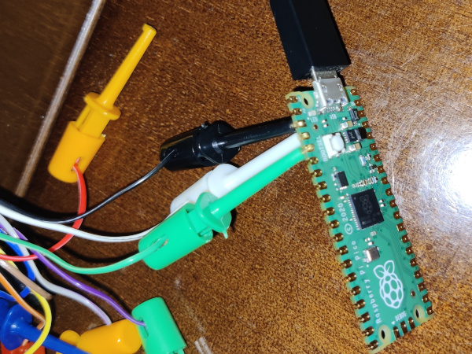
El conexionado entre Game&Watch y Raspberry Pi Pico es:
| Pico | GnW | Color |
|---|---|---|
| 3 | 3 | Negro |
| 4 | 5 | Blanco |
| 5 | 2 | Verde |
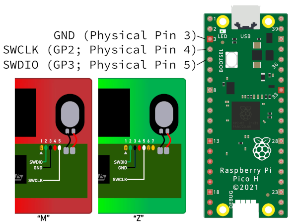
Desbloqueo del microcontrolador¶
Una vez resuelta la conectividad a la placa, el primer paso en la modificación es el desbloqueo del microcontrolador STM32H7 para que podamos sustituir el firmware que hay en su memoria flash interna así como poder escribir en la memoria flash externa (con código que inyectaremos en el propio microcontrolador).
Esta tarea se efectúa con el conjunto de utilidades gnwmanager. Este paquete se encuentra registrado en PyPI por lo que se puede instalar muy fácilmente con pip (preferiblemente dentro de un entorno virtual Python).
$ pip install gnwmanager
$ gnwmanager install openocd
Ahora, tras volver a conectar la batería de la consola si la habíamos desconectado, ejecutaremos el siguiente comando:
(gnwmanager) $ gnwmanager unlock
El proceso se interrumpirá en un par de ocasiones dando instrucciones por la terminal que deberemos seguir. Una salida típica sería:
(gnwmanager) [edu@thinkpad ~]$ gnwmanager unlock
If interrupted, resume unlocking with:
gnwmanager unlock --backup-dir=backups-2025-10-27-19-28-14
Detected ZELDA game and watch.
Backing up itcm to "backups-2025-10-27-19-28-14/itcm_backup_zelda.bin"... complete!
Backing up external flash to "backups-2025-10-27-19-28-14/flash_backup_zelda.bin"... complete!
Flashing payload to external flash... complete!
Payload successfully flashed. Perform the following steps:
1. Fully remove power, then re-apply power.
2. Press the power button to turn on the device; the screen should turn blue.
Press the "enter" key when the screen is blue:
Backing up internal flash to "backups-2025-10-27-19-28-14/internal_flash_backup_zelda.bin"... complete!
Unlocking device... complete!
Restoring firmware... complete!
Unlocking complete!
Pressing the power button should launch the original firmware.
Aparecerán los ficheros internal_flash_backup_zelda.bin, flash_backup_zelda.bin y itcm_backup_zelda.bin en un directorio backups-FECHA-HORA que conviene guardar.
Si encendemos en este momento la consola, no notaremos ningún cambio, es decir ejecutará el firmware original, pero ahora el chip estará desprotegido y podremos flashearle otro firmware.
Modificación 1: retro-go¶
Sustitución de la flash¶
En este momento toca empezar a modificar la consola seriamente. Como se comentaba al principio, el chip de almacenamiento externo del microcontrolador es una memoria flash de solo 4MB (modelo Zelda). No solo es pequeño para poder cargar muchos juegos, sino que tiene pocos ciclos de escritura, por lo que sustituir los juegos frecuentemente, o cachearlos cuando se hace la modificación para añadir la microSD, puede desgastarlo rápidamente. La modificación habitual es desoldar el chip flash de 4MB original y sustituirlo por otro de 64MB, concretamente el modelo MX25U51245GZ4I00.
Para retirar el chip flash original, es muy recomendable extraer la placa de la consola, desconectando las dos fajas de datos de la pantalla, desoldando el altavoz y retirando todos los tornillos. Una vez que tengamos la placa sobre la mesa de trabajo, protegemos con cinta kapton los alrededores del chip y lo extraemos aplicando flux y aire caliente con una pistola.
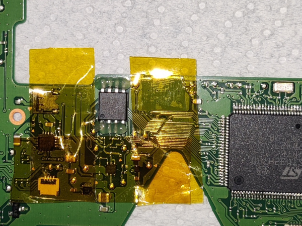
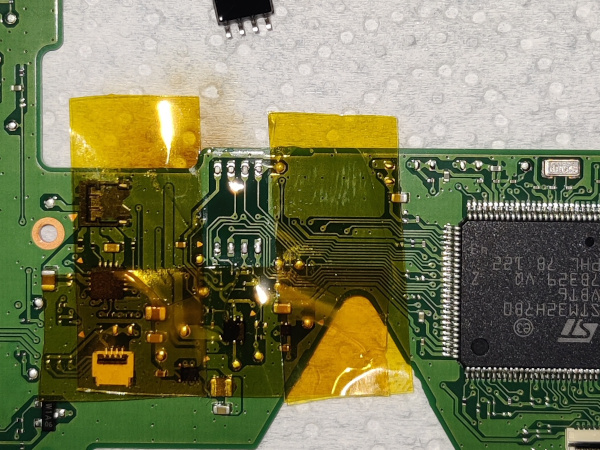
A continuación limpiamos con malla desoldadora la huella del chip que acabamos de retirar. También, aunque hay que hacerlo con sumo cuidado, ayuda rascar (con la punta de las pinzas por ejemplo) la máscara de soldadura de la PCB para ampliar hacia el exterior la superficie soldable de la huella de soldadura del chip.
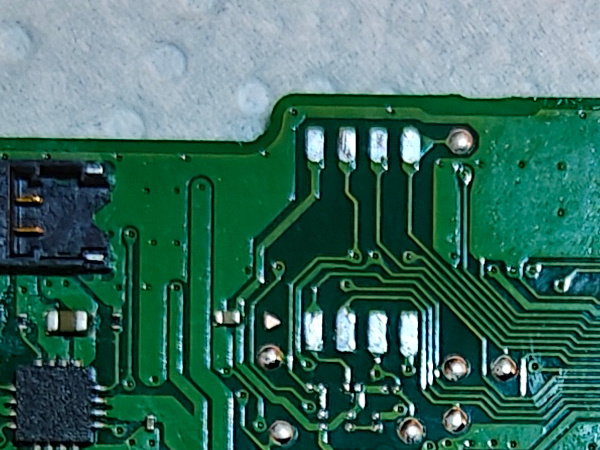
El nuevo chip flash tiene formato QFN-8 de soldadura superficial que no resulta sencillo de soldar. Es recomendable aplicar flux y preestañar los pads de dicho chip por la parte inferior. También recomiendo poner una tira de cinta kapton en la parte inferior de manera que este no quede directamente apoyado sobre la PCB, lo que dificultaría el flujo de estaño por los pads.
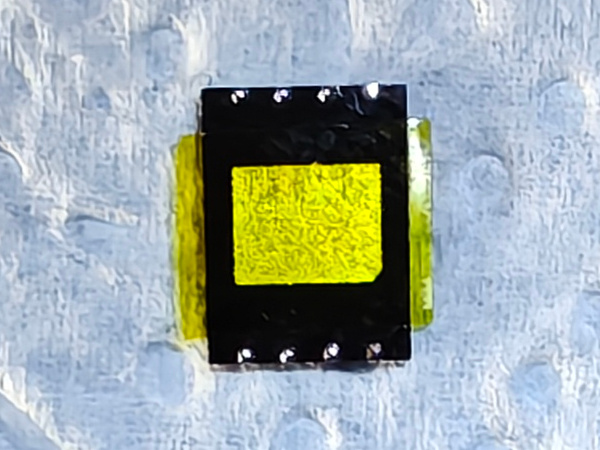
Hay que fijarse bien en el punto que lleva el chip en su encapsulado que marca el pin número 1 que se corresponde con el que tiene un triángulo indicador en la PCB como se puede ver en la segunda foto de las siguientes.
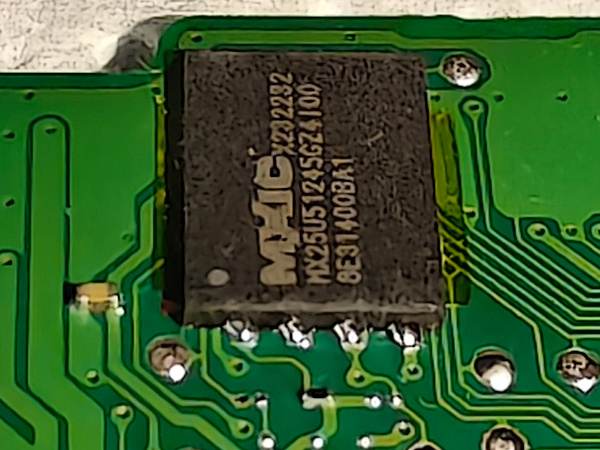
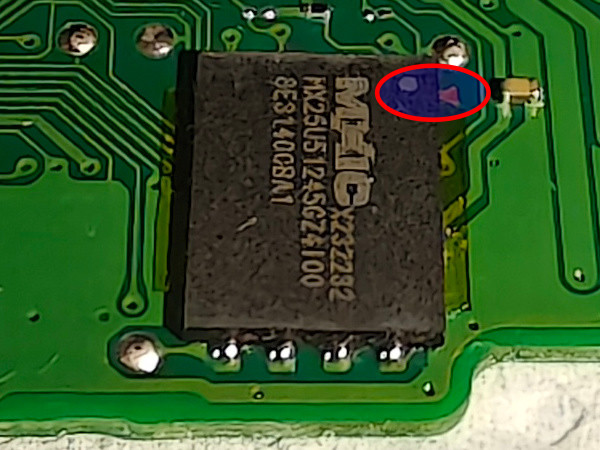
Flasheo retro-go¶
Una vez instalado el chip, es hora de flashear el firmware. Para esta modificación, me decanto por no hacer dual boot, es decir no instalar el firmware original parcheado junto a retro-go, para así tener todo el espacio de la memoria flash dedicado a los juegos. Para ello empezamos bajando el repositorio del mismo:
cd ~/git
git clone --recursive https://github.com/sylverb/game-and-watch-retro-go
cd game-and-watch-retro-go
Una vez bajado el código, toca instalar las ROMs en los directorios correspondientes a las distintas máquinas soportadas que encontraremos en ~/git/game-and-watch-retro-go/roms/. Por ejemplo, para instalar las ROMs de NES, copiamos las ROMs a ~/git/game-and-watch-retro-go/roms/nes/. Si queremos portadillas para los juegos, situaremos en los mismos directorios y con los mismos nombres de fichero de las ROMs correspondientes, las imágenes en formato jpg o png. Por ejemplo, para la ROM zelda.nes, situaremos la portada en ~/git/game-and-watch-retro-go/roms/nes/zelda.jpg.
Tenemos que tener en cuenta que todas las ROMs y sus portadillas tienen que caber en el chip flash de 64 MB que hemos instalado a la consola. La mayoría de las ROMs se comprimen, por lo que como regla de partida, utilizaremos el criterio de elegir ROMs por un tamaño total de aproximadamente el doble (128MB).
Ahora toca compilar el firmware (si no vamos a utilizar portadillas para aprovechar el espacio de sus ficheros para poder poner más ROMs, no incluir las variables de entorno COVERFLOW y JPG_QUALITY en los comandos de compilación y flasheo):
make docker_build
make docker
(docker) export GNW_TARGET=zelda
(docker) export ADAPTER=cmsis-dap
(docker) make clean
(docker) COVERFLOW=1 JPG_QUALITY=90 EXTFLASH_SIZE_MB=64 make -j$(nproc)
Al terminar la compilación se nos informará del tamaño resultante del binario que se flasheará en el chip. Por ejemplo:
External flash usage
Capacity: 61050880 Bytes ( 58.223 MB)
Usage: 54335345 Bytes ( 51.818 MB)
Free: 6715535 Bytes ( 6.404 MB)
Con esa información a la vista podremos iterar el proceso añadiendo o retirando ROMs hasta obtener un binario de unos 55MB, ya que hay que prever algo para los savestates de los juegos.
Una vez que estemos satisfechos con la ocupación del espacio, flashearemos el firmware volviendo a conectar la sonda de programación que comentamos en el apartado Sonda de programación.
(docker) COVERFLOW=1 JPG_QUALITY=90 EXTFLASH_SIZE_MB=64 make flash_gnwmanager
(docker) gnwmanager disable-debug
Una salida típica sería:
docker@53335bdd9199:/opt/workdir$ COVERFLOW=1 JPG_QUALITY=90 EXTFLASH_SIZE_MB=64 make flash_gnwmanager
Entering 'LCD-Game-Emulator'
Entering 'blueMSX-go'
Entering 'caprice32-go'
Entering 'fceumm-go'
Entering 'gwenesis'
Entering 'potator'
Entering 'prosystem-go'
Entering 'retro-go-stm32'
Entering 'smw'
Entering 'tamalib'
Entering 'zelda3'
[ BASH ] Checking for updated roms
100%|█████████████████████████████████████████████████████████████████| 208/208 [04:20<00:00, 1.25s/it]
docker@53335bdd9199:/opt/workdir$ gnwmanager disable-debug
docker@53335bdd9199:/opt/workdir$
Warning
En la versión de retro-go en el momento de escribir esto, al finalizar el comando make flash_gnwmanager aparecía un error (haciendo mención al parámetro OFFSET). Investigando parecía tratarse de un problema menor que sólo impedía la desactivación del modo debug del procesador. Esto puede tener implicaciones en el consumo de batería, y por eso incluyo la ejecución manual de la desactivación del debug al final. Conseguí que no apareciera el error sustituyendo las líneas 1028 a 1031 del archivo Makefile.common:
@$(GNWMANAGER) flash $(INTFLASH_ADDRESS) $(BUILD_DIR)/$(TARGET)_intflash.bin \
-- flash ext $(BUILD_DIR)/$(TARGET)_extflash.bin --offset=$(EXTFLASH_OFFSET) \
-- start $(INTFLASH_ADDRESS) \
$(RESET_DBGMCU_CMD)
@$(GNWMANAGER) flash $(INTFLASH_ADDRESS) $(BUILD_DIR)/$(TARGET)_intflash.bin \
-- flash ext $(BUILD_DIR)/$(TARGET)_extflash.bin --offset=$(EXTFLASH_OFFSET) \
-- start $(INTFLASH_ADDRESS)
Es importante que guardemos el fichero build/gw_retro_go.elf porque lo necesitaremos para extraer los savestates en el futuro.
Respaldar savestates retro-go¶
Si más adelante queremos extraer los savestates de los juegos, para poder volverlos a instalar tras flashear un nuevo firmware, en primer lugar necesitaremos depositar en el directorio build el fichero gw_retro_go.elf que obtuvimos en el paso anterior. Después podremos arrancar de nuevo el entorno docker y ejecutar el script de backup:
cd ~/git/game-and-watch-retro-go
make docker
(docker) export GNW_TARGET=zelda
(docker) export ADAPTER=cmsis-dap
(docker) ./scripts/saves_backup.sh build/gw_retro_go.elf
Los savestates aparecerán en el subdirectorio ~/git/game-and-watch-retro-go/save_states. Una vez que hayamos compilado y flasheado un nuevo firmware, podremos restaurarlos ejecutando el script de restauración:
(docker) ./scripts/saves_restore.sh
La restauración se hace de forma inteligente, es decir, si tenemos savestates de un juego que no está en el nuevo firmware, dicho savestate no se instalará en la consola, para evitar desperdiciar espacio de la memoria flash.
Modificación 2: retro-go-sd¶
Instalación módulo slot microSD¶
Al igual que con la modificación para el retro-go normal, para utilizar retro-go-sd hay que empezar haciendo una modificación hardware a la consola. Esta vez es más complicada, sobre todo la fase final de soldadura del módulo directamente sobre las patitas del microcontrolador, que tienen un paso muy pequeño.
El módulo se compone del propio lector de tarjetas microSD y 4 componentes. Todo ello soldado sobre una PCB tipo flex. La lista de componentes completa es:
- 1 lector de tarjetas microSD
- 1 resistencia 100kΩ 0603 o 0805
- 2 condensadores de 1μF 0603 o 0805
- 1 regulador de tensión RT9193-28GB. Hay personas que han reportado problemas con este modelo comprado en Aliexpress y recomiendan como reemplazo el "MIC5504-2.8YM5-TR".
- 1 PCB flex: Aquí se utiliza la versión de PrimoAngelo. La original que suele referenciarse en la mayoría de las guías es la de Tim Schuerewegen / hundshamer.
Empezaremos soldando los componentes sobre el PCB flex.
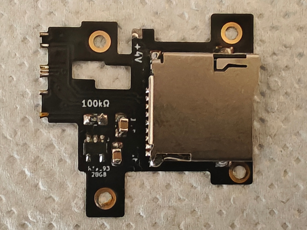
Lo siguiente como decíamos al principio será el difícil paso de instalar el módulo en la consola. Retiramos los cuatro tornillos que caen en su superficie y lo presentamos de forma que consigamos que los pads de la flex se encuentren alineados con las patitas del microcontrolador a la vez que estos quedan a sus pies, es decir de esta forma.
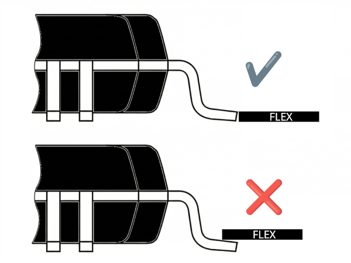
Una vez que se encuentre alineado a nuestro gusto, procederemos a fijarlo en su posición atornillando los cuatro tornillos. Ahora será cuando tendremos que armarnos de paciencia y flux de buena calidad para lograr hacer las soldaduras de los pads del flex y evitar a la vez los puentes entre las mismas. Será necesario comprobar continuidad de las soldaduras así como la no existencia de puentes entre las patitas adyacentes. Si finalmente lo conseguimos, solo resta añadir un punto de soldadura entre el pad marcado con +4V y el terminal del condensador que queda a su lado.
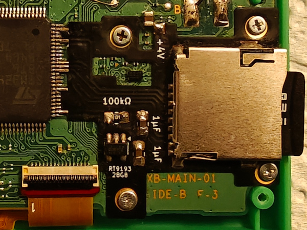
Flasheo bootloader¶
Lo siguiente será flashear el bootloader junto al firmware original parcheado de la consola para permitir el dual boot (esta vez sí merece la pena al contar con espacio prácticamente ilimitado para ROMs en la microSD). Desde el directorio donde estén los ficheros de backup de la consola y con un entorno Python que tenga instalado gnwmanager, ejecutaremos el siguiente comando:
(gnwmanager) $ gnwmanager flash-patch zelda internal_flash_backup_zelda.bin flash_backup_zelda.bin --bootloader
Una salida típica sería:
(gnwmanager) $ gnwmanager flash-patch zelda internal_flash_backup_zelda.bin flash_backup_zelda.bin --bootloader
100%|███████████████████████████████████████████████████████████████████| 16/16 [00:58<00:00, 3.66s/it]
Si encendemos en ese momento la consola, tras haber retirado la sonda de programación, veremos que arranca el firmware original (parcheado). Tras pulsar GAME + LEFT se ejecutará el bootloader y, como en ese momento Retro-Go SD todavía no estará instalado en la flash interna del STM32, se nos muestrará el siguiente aviso:
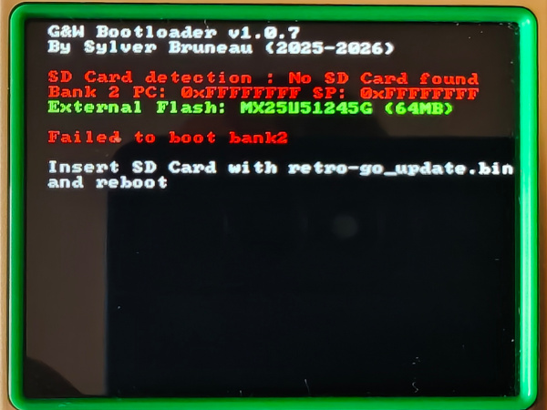
Instalación de Retro-Go SD¶
Solo nos restará instalar el firmware de Retro-Go SD. Para ello, copiaremos el fichero retro-go_update.bin que descargaremos de la última release publicada por Sylverb en el repositorio de Retro-Go SD al directorio raíz de la microSD. Al arrancar por primera vez, veremos en pantalla cómo se copian los ficheros de retro-go y los cores de los emuladores a la misma microSD.
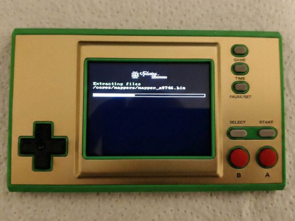
A la vez se creará en la microSD la estructura de directorios siguiente:
retro-go/
├── CONFIG
├── bios/
│ ├── coleco/
│ ├── msx/
│ ├── nes/
├── cores/
│ ├── mappers/
│ ├── a2600.bin
│ ├── a2600_defprops.bin
│ ├── a7800.bin
│ └── ...
├── data/
│ ├── a2600/
│ ├── a7800/
│ ├── amstrad/
│ └── ...
├── fonts/
│ ├── cp1251_greybeard.bin
│ ├── cp1251_sans_serif.bin
│ ├── cp1251_sans_serif_bold.bin
│ └── ...
└── roms/
├── a2600/
├── a7800/
├── amstrad/
└── ...
Sólo restará copiar las ROMs que queramos emular en los directorios correspondientes. Si queremos portadillas para los juegos, tendremos que crear el subdirectorio covers con los mismos subdirectorios del directorio roms y colocar allí las imágenes. Estas tienen que estar en un formato especial IMG que generaremos con un script que se incluye en el repositorio de Retro-Go SD. Los nombres de los archivos IMG tendrán que coincidir con los de las ROMs en su correspondiente directorio.
Carcasa trasera¶
Al colocar el slot microSD hay que modificar la tapa trasera de la consola puesto que el lector cae sobre unos postes de apoyo de la cruceta. También hay que perforar el lateral para dejar paso a la microSD para poder extraerla e insertarla cuando queramos cambiar los juegos, rescatar savestates o actualizar el firmware. Para realizar la perforación existen unos utillajes diseñados por el usuario facelesstech que ayudan mucho a que la ranura quede limpia. En el vídeo que hay al final de este artículo, puede verse cómo se realiza esta modificación.
Existe una alternativa si no queremos arriesgarnos a estropear definitivamente la tapa original, y es imprimir en 3D el modelo creado por el usuario Aradia y que puede descargarse de aquí.
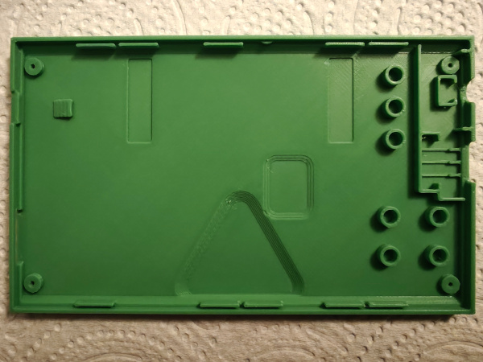
El color verde que he encontrado más parecido al verde de la consola Zelda es el 15-Verde de OVERTURE.
Controles¶
Indicamos a continuación las combinaciones de teclas de manejo de Retro-go SD (aunque muchas de ellas funcionan también en Retro-go). Manteniendo pulsado el botón PAUSE/SET mientras se presionan otros botones se realizan las siguientes acciones:
| Combinación de teclas | Acción |
|---|---|
PAUSE/SET + GAME |
Guardar una captura de pantalla (deshabilitado por defecto en builds con flash de 1MB) |
PAUSE/SET + TIME |
Cambiar velocidad de ejecución (1x/1.5x) |
PAUSE/SET + UP |
Aumentar brillo |
PAUSE/SET + DOWN |
Disminuir brillo |
PAUSE/SET + RIGHT |
Aumentar volumen |
PAUSE/SET + LEFT |
Disminuir volumen |
PAUSE/SET + B |
Cargar state |
PAUSE/SET + A |
Guardar state |
PAUSE/SET + A |
Autodisparo en botón A |
PAUSE/SET + B |
Autodisparo en botón B |
PAUSE/SET + POWER |
Apagar sin guardar save-state |
PAUSE/SET + POWER |
Después de haber hecho PAUSE/SET y seleccionar Power off, arrancará el bootloader sin llegar a llamar a Retro-go, lo que nos permitirá ver la versión del bootloader así como información sobre la detección de la microSD y el estado de las memorias flash interna y externa |
Referencias¶
No quiero terminar sin hacer mención al servidor de Discord de stacksmashing y a los siguientes usuarios cuyo trabajo ha hecho posible estas modificaciones:
- stacksmashing
- kbeckmann
- Tim Schuerewegen
- BrianPugh
- GMMan
- tfmoe__
- Sylver Bruneau
- facelesstech
- DasBoss
- bxhxx
- Benjamin Solberg
- orzeus
- ducalex
- ZimM
- Ninoh-FOX
- PrimoAngelo
- Aradia
En el siguiente video de Macho Nacho se puede ver el todo el proceso de modificación de la consola (el flex del módulo microSD es el modelo que no se sujeta con los tornillos sino con puntos de soldadura sobre la PCB de la G&W):